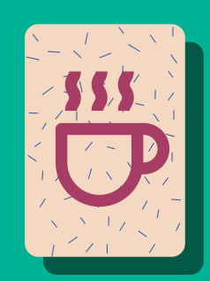
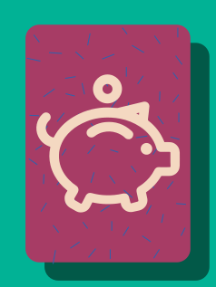
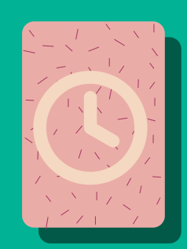
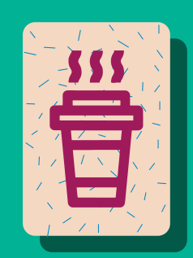
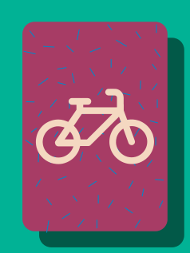
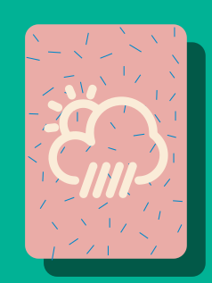

Edouard et Jeanne
Do you want a coffee ?
We often wonder if we want a coffee. We quickly come to a conclusion: yes I want a coffee or not I do not want coffee. Before arriving at this conclusion we ask ourselves a great quantity of alternative questions to be on our choice at the end of our reflection. Obviously we do not realize that. Our brain is well done! "Do you want a coffee ?" That's the first question. If we do not want a coffee our relfection stops and our brain thinks of something else. But if we want a coffee our brain begins a long reflection and a complementary issue does not come to the right conclusion.
Some of these steps have been recapitulated. At each step you have the choice between "yes" and "no" , click on an answer to see the solution.Here we go !
Do you have coffee ?


Do you have money to buy ?
Do you have time to drink one ?


Do you get one on the road ?
Can you get there by bike ?


Did you watch the weather ?